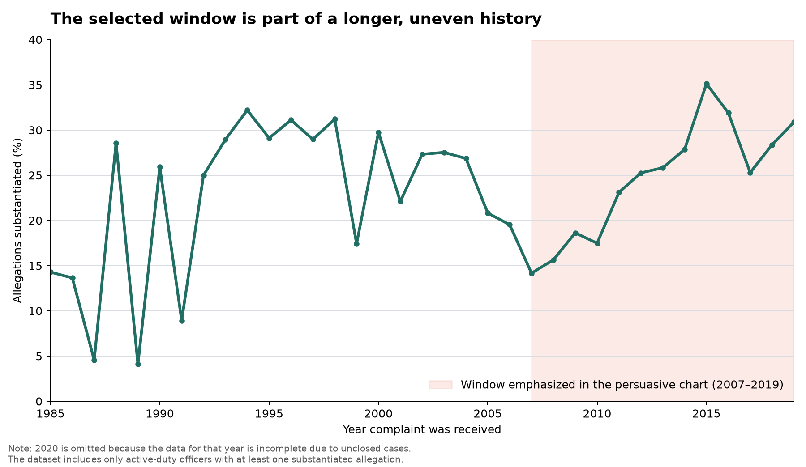
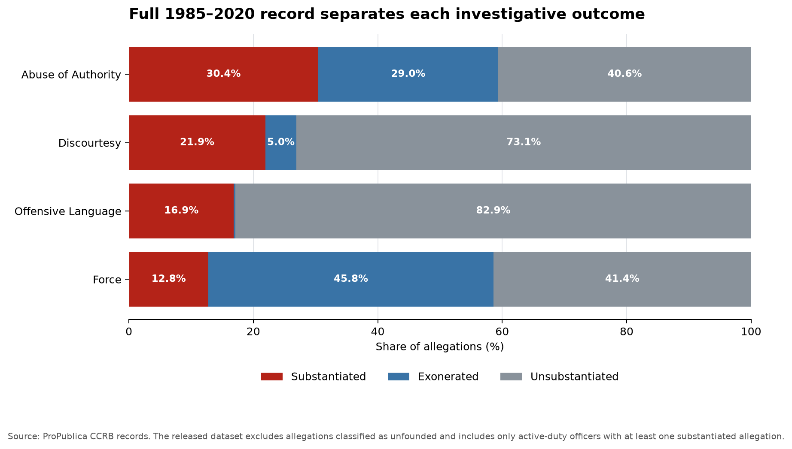

Proposition: The NYPD’s civilian complaint system holds officers accountable.
Data: ProPublica’s Civilian Complaints Against New York City Police Officers. Each chart below has a “Show what we left out” button that swaps our persuasive chart for a version of the same data with the omitted years and outcomes restored.
FOR the Proposition


Design Decisions and Rationale:
-
Decision 1: Starting the window at the 2007 low
- Deception Score: -1.5
- Rationale: The substantiation rate was 14% in 2007, the lowest point in our window, and it reached about 35% in 2015. We left out earlier years, when rates were already higher—about 27–31% in much of 1995–2004, with dips to 17% in 1999 and 22% in 2001. This means part of the rise is a recovery from a low point rather than a new trend. Starting at the low makes the improvement look larger and supports the claim that the system is steadily getting stronger. We considered showing the full history, but it weakened that claim.
-
Decision 2: Truncated y-axis with a filled area
- Deception Score: -1.0
- Rationale: The y-axis runs from 10% to 40% instead of starting at zero, and the shaded area under the line exaggerates the size of the rise. We kept the zoom moderate so the truncation is not immediately obvious. A zero-based axis was the alternative, but it flattens the trend and makes the change look small.
-
Decision 3: Headline and orange highlights
- Deception Score: -1.0
- Rationale: The title, “Findings Against Officers More Than Doubled Since 2007,” and the orange callouts on 2007 and 2015 draw the eye to the two most favorable points and away from the drop after 2015. The title also says “findings against officers,” while the y-axis measures the share of allegations substantiated, which is a different thing. The claim is true (14% to 31–35%), but it is worded to sound stronger than the chart shows.
-
Decision 4: Correct calculation, labeled axes, and a cited source
- Deception Score: +1.0
- Rationale: Each point is the share of allegations substantiated, grouped by the year the complaint was received. The axes are labeled and the source is cited, so a careful reader can see what is plotted. This is the most earnest choice, but it does not offset the caveats we left off the chart: the latest year is incomplete because of unclosed cases, and the data only covers officers still on the force.
Data transformation
We collapsed the allegation-level file into one row per complaint with a groupby on complaint_id and a calculated flag, “any substantiated allegation.” Overall, 24.9% of allegations are substantiated, but 32.0% of complaints contain at least one substantiated allegation, a 7-point swing from the denominator alone. Viz 2 uses the allegation-level column.
| Year | Allegation-level | Complaint-level |
|---|---|---|
| 2007 | 14.2% | 17.5% |
| 2008 | 15.6% | 18.7% |
| 2009 | 18.6% | 23.0% |
| 2010 | 17.5% | 21.0% |
| 2011 | 23.1% | 29.7% |
| 2012 | 25.3% | 32.3% |
| 2013 | 25.8% | 34.2% |
| 2014 | 27.8% | 38.2% |
| 2015 | 35.1% | 49.9% |
| 2016 | 31.9% | 43.5% |
| 2017 | 25.3% | 40.1% |
| 2018 | 28.4% | 46.8% |
| 2019 | 30.9% | 54.1% |
| All years | 24.9% | 32.0% |
AGAINST the Proposition


How the honest comparison was calculated
Figure 2b uses the allegation-level ProPublica CCRB file, where each row represents one allegation. We grouped the detailed board_disposition values into three outcomes while keeping Exonerated and Unsubstantiated separate:
- Every disposition beginning with “Substantiated” was grouped as Substantiated.
- Exonerated remained separate; it means the reported conduct occurred but was allowed under NYPD rules.
- Unsubstantiated remained separate; it means there was insufficient evidence to determine whether misconduct occurred.
- The allegations were grouped by
fado_type, and each outcome count was divided by the total number of allegations in that FADO category.
outcome percentage = allegations with that outcome
÷ all allegations of that FADO type
× 100| FADO type | Total allegations | Substantiated | Exonerated | Unsubstantiated |
|---|---|---|---|---|
| Abuse of Authority | 20,292 | 30.4% | 29.0% | 40.6% |
| Discourtesy | 4,677 | 21.9% | 5.0% | 73.1% |
| Offensive Language | 753 | 16.9% | 0.3% | 82.9% |
| Force | 7,636 | 12.8% | 45.8% | 41.4% |
The 0.3% Exonerated share for Offensive Language appears as a very small blue segment, but its label is omitted because the segment is too narrow to hold readable text. This chart uses the full 1985–2020 file; 2020 is incomplete, so the values should not be interpreted as a complete record of that year.
Data source: a public copy of ProPublica’s allegations CSV, associated with ProPublica’s NYPD CCRB project. ProPublica’s release excludes allegations classified as unfounded and includes only active-duty officers with at least one substantiated allegation.
Design Decisions and Rationale:
-
Decision 1: Grouping “Exonerated” and “Unsubstantiated” into one gray bar
- Deception Score: -1.5
- Rationale: We merged two different outcomes into a single gray bar labeled “Exonerated or Unsubstantiated”: “Exonerated” means the conduct happened but was allowed under NYPD rules, and “Unsubstantiated” means there was not enough evidence. This makes every non-substantiated case look like a failure to hold officers accountable, even though many of those cases ended with a finding that the officer followed the rules. We considered showing the outcomes separately, but that split the non-substantiated share into two smaller bars and weakened the visual impact. The merged bar reaches 91.2% for Force, so impunity looks nearly universal.
-
Decision 2: Limiting the window to 2000–2009
- Deception Score: -1.0
- Rationale: We filtered to complaints received from 2000 to 2009 instead of showing the full 1985–2020 record. In this window the Force substantiation rate is 8.8%, compared with 12.8% across the full record. We chose it because the full record includes years with higher substantiation rates, which would soften the argument. The subtitle states the window, so it is defensible, but the chart does not explain why these years were picked. The alternative was the full timeline, but the lower rate and sharper contrast made 2000–2009 more persuasive.
-
Decision 3: Red versus gray color encoding
- Deception Score: -0.5
- Rationale: We colored “Substantiated” in saturated red and the other outcomes in muted gray. This draws the eye to the short red bars next to the long gray ones, so low substantiation looks like the thing that is wrong. A neutral palette, such as blue versus orange, would have treated both outcomes as equally normal. Using color to emphasize a category is a standard technique, but here it also signals that substantiation is the “correct” outcome, so we scored it slightly deceptive.
-
Decision 4: Editorialized title
- Deception Score: -1.0
- Rationale: Instead of a descriptive title such as “Distribution of Allegation Outcomes by FADO Category,” we used “Where Complaints Matter Most, Findings Are Rarest: Force Allegations Expose a System Lacking Accountability.” It tells readers that a low substantiation rate is proof of a broken system before they read any numbers, even though a low rate could also reflect complaints that could not be proven. A neutral title would not have supported the anti-proposition stance.
-
Decision 5: Not disclosing the dataset’s limits
- Deception Score: -2.0
- Rationale: ProPublica’s file only includes active-duty officers with at least one substantiated allegation, and it excludes allegations classified as unfounded. The persuasive chart does not say this, even though it means complaints against officers who left, or who were never found to have committed misconduct, are missing. We consider this the most deceptive choice, because it limits what the data can say about the whole system, and the chart presents its rates as if they describe all complaints.
Final Reflection
The biggest lesson of this project was how easily we could make data look misleading without changing any of the numbers. Every choice we made, such as which years to include, how to group outcomes, what to highlight, and how to word the title, seemed reasonable on its own. The effect became clear when we put our two charts side by side. Our Pro chart starts in 2007, a low year, to show a steady rise, while our Anti chart uses 2000–2009 to show low substantiation rates. Each window leaves out the data that would weaken its own argument, and the same dataset supports both stories. We also drafted charts on complaint-level outcomes and on the growth in complaint volume, but we cut them. The harder part wasn’t making the charts, but deciding when a design choice stopped being persuasive and became misleading, especially for grouping exonerated cases with unsubstantiated ones, because it hides a real difference in what those outcomes mean.
We also found that the dataset’s limits affect even accurate charts. ProPublica’s file only includes active-duty officers with at least one substantiated allegation, and it excludes allegations classified as unfounded. Complaints against officers who left or were never found to have committed misconduct are missing, so a chart with correct numbers and a labeled axis still cannot show the full picture of civilian complaints. Leaving this out of our charts made them more persuasive, and it is the choice we consider most deceptive. It was also the easiest to overlook, because it comes from the data rather than from any decision about how to draw the chart. The “Show what we left out” buttons are our way of making that visible: each one shows the same records with the omitted years and outcomes restored.
We think ethical visualization comes down to whether a chart gives readers enough information to understand what the data actually shows. Choosing colors, titles, and time windows to make a point is acceptable persuasion, as long as those choices don’t hide context that would change a reader’s conclusion. Persuasion becomes deception when it makes a claim the data does not support, for example by presenting a partial dataset as the whole system or by presenting a choice of window as a trend. There isn’t always a clear line, but a useful test is to ask what we are leaving out and whether including it would change how readers interpret the chart.